02.28.2007 07:14
Not enough visual content
Some people have dinged me lately for not having enough visual content
in my blog. How about another UNH sunrise image? This one I took
this morning.
02.27.2007 15:17
Macs not taking security patch 2007-02?
One of my macs does not seem to think that I have installed security
patch 2007-02. I have now installed the patch 2x and it still wants
me to install the patch. Yet, I do have a receipt for it!
Update: I submitted a bug to apple (https://bugreport.apple.com/) and got this response. At least I know I am not alone.
ls -l /Library/Receipts/SecUpd2007-002Ti.pkg/Contents/ total 104 -rwxrwxr-x 1 root admin 93719 Feb 6 22:37 Archive.bom -rw-rw-r-- 1 root admin 1824 Feb 27 14:04 Info.plist drwxrwxr-x 27 root admin 918 Feb 27 14:04 Resources -rw-rw-r-- 1 root admin 3622 Feb 6 22:37 SecUpd2007-002Ti.dist -rw-rw-r-- 1 root admin 418 Feb 6 20:58 version.plistWhat gives?
Update: I submitted a bug to apple (https://bugreport.apple.com/) and got this response. At least I know I am not alone.
This is a follow up to Bug ID# 5026512. After further investigation it has been determined that this is a known issue, which is currently being investigated by engineering. This issue has been filed in our bug database under the original Bug ID# 5006444. . If you have any additional questions related to this bug or wish to check on status of the original issue, please send an email to <devbugs@apple.com>, referencing your Bug ID# 5026512. . Thank you for submitting this bug report. We truly appreciate your assistance in helping us discover and isolate bugs. . Best Regards, The Bug Reporting Team
02.26.2007 12:48
Windows boxes at sea
Windows Boxes at Sea [theregister.co.uk]
... The Type 45 destroyers now being launched will run Windows for Warships: and that's not all. The attack submarine Torbay has been retrofitted with Microsoft-based command systems, and as time goes by the rest of the British submarine fleet will get the same treatment, including the Vanguard class (V class). The V boats carry the UK's nuclear weapons and are armed with Trident ICBMs, tipped with multiple H-bomb warheads.
All this raises a number of worrying issues. ...
02.26.2007 09:45
AIS message 20 and noaadata-0.18
I just added AIS Message 20 (Data Link Management - D) to
noaadata/ais. This message pushes my xml system to the edge. I am
continually discovering places where the AIS specification is not
"regular". In the case of this message, there is a variable
length spare at the end of the message that is needed to byte-align
the message. If you are thinking of creating AIS messages, please
study up on grammars before doing so. I suggest Ulman's two books on
Introduction to Computer Science and Compilers (aka the "Dragon
Book"). Just because something is easy to describe in English, does
not me it is easy to code or generalize. I am trying to avoid special
cases for each message and I really do not want to hand code messages.
Now that I have said that, here is a quick example of parsing a message 20 from an unconfigured base station. I introduced an "optional" tag for message 20. If you try to use it on another message, my compiler will tell you that it is not allowed. Do NOT use it elsewhere!!!0.18 - 2007-Feb-26
Now that I have said that, here is a quick example of parsing a message 20 from an unconfigured base station. I introduced an "optional" tag for message 20. If you try to use it on another message, my compiler will tell you that it is not allowed. Do NOT use it elsewhere!!!
./ais_msg_20.py -d '!AIVDO,1,1,,B,D000h>@00000,0*75,runhtest,1172243773.6'
datalinkmng:
MessageID: 20
RepeatIndicator: 0
UserID: 12345
Spare: 0
offset1: 0
numslots1: 0
timeout1: 0
increment1: 0
And the changelog for latest release:
- Added base station messages 4, 20, and 22
- Now using xinclude to pull in structs to xml
- Added ais_build_postgis.py to scripts
- ais_normalize.py script handles normalization of nmea messages so that they are one complete message per line
- sls messages moved to a subdir of ais. Work-in-progress
02.26.2007 07:43
fire mac app end of life
I have been using Fire for
quite some time. When Adium came came out, I switch away from Fire
for everything accept IRC. Adium does not want to support IRC. I use
IRC for work related collaborations... here is my IRC channels from
fire (using irc.us.freenode.net:
The Adium page recommends Colloquy for IRC.
- fink - my most frequented channel
- macpython
- opendarwin
- postgis
- python
- sqlalchemy
- xml
The Adium page recommends Colloquy for IRC.
02.24.2007 19:02
mac system_profile command
There is a GUI for this on the mac, but dmalloc just pointed me to the
system_profile command to get more info about a machine in a shell script.
First example is my laptop:
Hardware:
Hardware Overview:
Machine Name: PowerBook G4 15"
Machine Model: PowerBook5,4
CPU Type: PowerPC G4 (1.1)
Number Of CPUs: 1
CPU Speed: 1.5 GHz
L2 Cache (per CPU): 512 KB
Memory: 1 GB
Bus Speed: 167 MHz
Boot ROM Version: 4.8.6f0
Serial Number: *******
An intel mac desktop:
Hardware:
Hardware Overview:
Machine Name: Mac Pro
Machine Model: MacPro1,1
Processor Name: Dual-Core Intel Xeon
Processor Speed: 2.66 GHz
Number Of Processors: 2
Total Number Of Cores: 4
L2 Cache (per processor): 4 MB
Memory: 4 GB
Bus Speed: 1.33 GHz
Boot ROM Version: MP11.005C.B04
SMC Version: 1.7f8
Serial Number: *****
And of course, need to have my G5 desktop at work:
Hardware:
Hardware Overview:
Machine Name: Power Mac G5 Quad
Machine Model: PowerMac11,2
CPU Type: PowerPC G5 (1.1)
Number Of CPUs: 4
CPU Speed: 2.5 GHz
L2 Cache (per CPU): 1 MB
Memory: 8 GB
Bus Speed: 1.25 GHz
Boot ROM Version: 5.2.7f1
Serial Number: ********
To go with this... thanks to Vasi for this little byte order test code. On a PPC Mac:
touch foo.h; cpp -dM foo.h | grep __BIG_ENDIAN__ #define __BIG_ENDIAN__ 1 touch foo.h; cpp -dM foo.h | grep __BIG_ENDIAN__ > /dev/null; echo $? 0 touch foo.h; cpp -dM foo.h | grep __LITTLE_ENDIAN__ > /dev/null; echo $? 1Intel Mac:
touch foo.h; cpp -dM foo.h | grep __BIG_ENDIAN__
touch foo.h; cpp -dM foo.h | grep __BIG_ENDIAN__ > /dev/null; echo $? 1 cpp -dM foo.h | grep __LITTLE_ENDIAN__ > /dev/null; echo $? 0
02.24.2007 07:09
including xml documents in other xml documents (xinclude)
Here is a really simple example of using xinclude to bring another xml
document into a document. First the main xml document (test.xml):
<foo xmlns:xi="http://www.w3.org/2001/XInclude"> <xi:include href="somewhere.xml"/> </foo>So we are going to include somewhere.xml into this document. somewhere.xml is pretty simple:
<atag>bar</atag>Now use xmllint to see what the document looks like without xinclude turned on: "xmllint test.xml"
<?xml version="1.0"?> <foo xmlns:xi="http://www.w3.org/2001/XInclude"> <xi:include href="somewhere.xml"/> </foo>Now turn on xinclude: "xmllint --xinclude test.xml"
<?xml version="1.0"?> <foo xmlns:xi="http://www.w3.org/2001/XInclude"> <atag>bar</atag> </foo>
02.23.2007 10:28
ais base station powerup messages
Want to know what an AIS basestation sends on power up? This unit is
sitting on my desk without the required interfaces. I only have a
serial line hooked up to the presentation interface (PI). Missing are
the GPS antenna and the VHF antenna. I have done nothing to configure
the box. As is expected, the box is saying that it is not ready to go.
This is using my simple serial logger script in the noaadata python
package.
./serial_logger.py -v -u -s unhtest cat log.2007-02-23 # START LOGGING UTC seconds since the epoch: 1172243679.96 # SPEED: 38400 # PORT: /dev/tty.KeySerial1 # TIMEOUT: 300.0 # STATIONID: unhtest $AIALR,000000.00,001,V,V,AIS: Tx malfunction*4B,runhtest,1172243685.94 $AITXT,1,1,007,AIS: UTC clock lost*08,runhtest,1172243685.95 $AIALR,000000.00,002,V,V,AIS: Antenna VSWR exceeds limit*45,runhtest,1172243686.02 $AIALR,000000.00,003,V,V,AIS: Rx channel 1 malfunction*1D,runhtest,1172243686.05 $AIALR,000000.00,004,V,V,AIS: Rx channel 2 malfunction*19,runhtest,1172243686.06 $AIALR,000000.00,005,V,V,AIS: Rx channel 70 malfunction*2D,runhtest,1172243686.08 $AIALR,000000.00,006,V,V,AIS: General Failure*14,runhtest,1172243686.09 $AIALR,000000.00,008,V,V,AIS: MKD connection lost*7C,runhtest,1172243686.11 $AIALR,000000.00,025,V,V,AIS: External EPFS lost*1A,runhtest,1172243686.13 $AIALR,000000.00,026,V,V,AIS: No sensor position in use*6A,runhtest,1172243686.14 $AIALR,000000.00,029,V,V,AIS: No valid SOG information*6F,runhtest,1172243686.16 $AIALR,000000.00,030,V,V,AIS: No valid COG information*77,runhtest,1172243686.17 $AIALR,000000.00,032,V,V,AIS: Heading lost/invalid*17,runhtest,1172243686.19 $AIALR,000000.00,035,V,V,AIS: No valid ROT information*70,runhtest,1172243686.21 $AIALR,000000.00,051,V,V,AIS: IEC Comm Error*1B,runhtest,1172243686.22 $AIALR,152433.00,052,A,V,AIS: UTC Lost*70,runhtest,1172243686.24 $AIALR,152433.00,052,A,V,AIS: UTC Lost*70,runhtest,1172243713.95 $AIALR,152433.00,052,A,V,AIS: UTC Lost*70,runhtest,1172243743.95 !AIBRF,0000012345,,0*43,runhtest,1172243745.36 $AIALR,152534.00,002,A,V,AIS: Antenna VSWR exceeds limit*56,runhtest,1172243746.97 !AIVDO,1,1,,B,D000h>@00000,0*75,runhtest,1172243746.98 $AIALR,152534.00,001,A,V,AIS: Tx malfunction*58,runhtest,1172243746.99 $AIALR,152534.00,001,A,V,AIS: Tx malfunction*58,runhtest,1172243747.0 $AIALR,152534.00,001,A,V,AIS: Tx malfunction*58,runhtest,1172243747.01 !AIVDO,1,1,,A,4000h>@000Httt>>GPK<7<701P00,0*37,runhtest,1172243747.03 $AIALR,152534.00,001,A,V,AIS: Tx malfunction*58,runhtest,1172243747.04 $AIALR,152534.00,001,A,V,AIS: Tx malfunction*58,runhtest,1172243747.05 $AIALR,152534.00,001,A,V,AIS: Tx malfunction*58,runhtest,1172243747.07 $AIALR,152534.00,001,A,V,AIS: Tx malfunction*58,runhtest,1172243747.08 $AIALR,152534.00,001,A,V,AIS: Tx malfunction*58,runhtest,1172243747.09 $AIALR,152534.00,001,A,V,AIS: Tx malfunction*58,runhtest,1172243747.11 $AIALR,152534.00,001,A,V,AIS: Tx malfunction*58,runhtest,1172243747.12 $AIALR,152534.00,001,A,V,AIS: Tx malfunction*58,runhtest,1172243747.13 $AIALR,152534.00,001,A,V,AIS: Tx malfunction*58,runhtest,1172243747.14 !AIVDO,1,1,,B,F000h>B2N2P3D73EB6`>6bT20000,0*75,runhtest,1172243748.04 !AIVDO,1,1,,B,4000h>@000Httt>>GPK<7<707T00,0*36,runhtest,1172243757.0 !AIVDO,1,1,,A,4000h>@000Httt>>GPK<7<705`00,0*03,runhtest,1172243767.0 !AIVDO,1,1,,B,D000h>@00000,0*75,runhtest,1172243773.6 $AIALR,152534.00,001,A,V,AIS: Tx malfunction*58,runhtest,1172243773.96 $AIALR,152534.00,002,A,V,AIS: Antenna VSWR exceeds limit*56,runhtest,1172243773.97 $AIALR,152433.00,052,A,V,AIS: UTC Lost*70,runhtest,1172243773.98 !AIVDO,1,1,,B,F000h>B2N2P3D73EB6`>6bT20000,0*75,runhtest,1172243774.68 !AIVDO,1,1,,B,4000h>@000Httt>>GPK<7<707T00,0*36,runhtest,1172243777.0 !AIVDO,1,1,,A,4000h>@000Httt>>GPK<7<707P00,0*31,runhtest,1172243787.0Now I need to update my code to handle messages 4 and 22 ('F').
02.22.2007 18:34
Talk Friday - 22-Feb-2007 - Peter Coppin
Please join us for a talk by Peter Coppin:
EventScope: merging rover operations with educational content creation using techniques from visual art and design
Presenter: Peter Coppin, Project Scientist,Director of the EventScope Project , Robotics Institute, Carnegie Mellon University Date: 02/23/07 (Friday) Time: 2:00 pm Location: Chase 130 - the Video Classroom
Abstract: The EventScope Project at Carnegie Mellon University recently supported rover science operations for the Zoe semi-autonomous desert rover while simultaneously delivering guided tours through data returned by Zoe to educational audiences at museums and other educational audiences. The EventScope Project created and supports several interrelated tools that make this possible.
An easy-to-use EventScope Viewer delivers annotated guided tours through 3D Virtual Environment Terrain Models to formal and informal education audiences. An Authoring Tool enables experts in education, content development or visual design/art to create the annotated guided tours.
A Rover Operations version of EventScope provides an easy way for science teams to direct the activities of a semi-autonomous rover. The products of these rover interactions can then be re-authored within EventScope for dissemination to museums, schools and other educational environments.
Bio: Peter Coppin develops Remote Experiences for the public. Coppin develops this work as Director of the EventScope Project [www.eventscope.org] at the Robotics Institute at Carnegie Mellon University. EventScope collaborates closely with the Robotics Institute that is also at Carnegie Mellon University.
Prior to EventScope, Coppin directed the BigSignal Project [www.bigsignal.net] at the Robotics Institute at Carnegie Mellon. BigSignal was one of the first telescience interfaces for educational audiences.
Prior to BigSignal, Coppin was a nationally and internationally exhibiting electronic media artist and designer. In this capacity, Coppin produced work shown at venues such as the Ars Electronica Festival in Linz, Austria; MIR: Art in Space in Bolzono, Italy; the SIGGRAPH Touchware Exhibition in Orlando, Florida and others. Occasionally, Coppin teaches art and technology project classes such as Telepresence Art and Applications, listed within departments at Carnegie Mellon such as the Human-Computer Interaction Institute, the School of Art and the Robotics Institute.
02.22.2007 18:06
Mars rover software
NASA loosens leash on Mars rovers [new scientist]
... Tony Stentz of Carnegie Mellon University in Pittsburgh, Pennsylvania, US, whose research provided the basis for the new rover navigation software, says he hopes the software will be used on future missions like NASA's Mars Science Laboratory (MSL).
"The more they can do without direct help from humans, the better," he told New Scientist. "The benefit of autonomy is that the rovers can get farther faster."
Eventually, he says, humans may have little need to control robotic rovers. "I think we could get to the point where the rovers go up there with a very long-range mission and they execute that mission pretty much on their own . . . and stream back scientific data for the scientists here to look at," he told New Scientist.
In the nearer term, Maimone says MSL would benefit from an automatic way to avoid sand traps, which have mired the current rovers several times in the past. ...
02.22.2007 10:00
guessable hostnames are often good
I am unable to find a police at UNH for what to do about time
synchronization. We are going with the ntp pool, but what does UNH do
as a whole?
for name in ntp time time0 time1 timeA bigben; do ping -c 4 $name.unh.edu; done ping: cannot resolve ntp.unh.edu: Unknown host ping: cannot resolve time.unh.edu: Unknown host ping: cannot resolve time0.unh.edu: Unknown host ping: cannot resolve time1.unh.edu: Unknown host ping: cannot resolve timeA.unh.edu: Unknown host ping: cannot resolve bigben.unh.edu: Unknown hostFor stanford, I see this:
for name in ntp time time0 time1 timeA bigben; do echo $name;ping -c 2 $name.stanford.edu; done ntp PING time.best.stanford.edu (171.64.7.89): 56 data bytes 64 bytes from 171.64.7.89: icmp_seq=0 ttl=45 time=95.527 ms 64 bytes from 171.64.7.89: icmp_seq=1 ttl=45 time=94.737 ms time PING time.best.stanford.edu (171.64.7.89): 56 data bytes 64 bytes from 171.64.7.89: icmp_seq=0 ttl=45 time=96.779 ms 64 bytes from 171.64.7.89: icmp_seq=1 ttl=45 time=94.562 ms time0 ping: cannot resolve time0.stanford.edu: Unknown host time1 ping: cannot resolve time1.stanford.edu: Unknown host timeA ping: cannot resolve timeA.stanford.edu: Unknown host bigben ping: cannot resolve bigben.stanford.edu: Unknown hostOr ucsd
cd && for name in ntp time time0 time1 timeA bigben; do echo $name;ping -c 2 $name.ucsd.edu; done ntp PING bigben.ucsd.edu (132.239.1.6): 56 data bytes 64 bytes from 132.239.1.6: icmp_seq=0 ttl=45 time=90.293 ms 64 bytes from 132.239.1.6: icmp_seq=1 ttl=45 time=90.036 ms time PING nodem-rsm-vl99.ucsd.edu (132.239.254.57): 56 data bytes 64 bytes from 132.239.254.57: icmp_seq=0 ttl=237 time=91.056 ms 64 bytes from 132.239.254.57: icmp_seq=1 ttl=237 time=91.238 ms time0 ping: cannot resolve time0.ucsd.edu: Unknown host time1 ping: cannot resolve time1.ucsd.edu: Unknown host timeA ping: cannot resolve timeA.ucsd.edu: Unknown host bigben PING bigben.ucsd.edu (132.239.1.6): 56 data bytes 64 bytes from 132.239.1.6: icmp_seq=0 ttl=45 time=89.948 ms 64 bytes from 132.239.1.6: icmp_seq=1 ttl=45 time=90.085 msBTW, here is my current /etc/ntp.conf. Email me if you have suggestions for a better ntp.conf to put on data logging boxes. Roland likes to have the Candian pool in there.
server 0.north-america.pool.ntp.org
server 1.north-america.pool.ntp.org
server 2.north-america.pool.ntp.org
server 3.north-america.pool.ntp.org
server 0.us.pool.ntp.org
server 1.us.pool.ntp.org
server 2.us.pool.ntp.org
server 3.us.pool.ntp.org
# --- Generate some Statistics ---
statsdir /var/log/ntpstats/
filegen peerstats file peerstats type day enable
filegen loopstats file loopstats type day enable
filegen clockstats file clockstats type day enable
# ... and use the local system clock as a reference if all else fails
# NOTE: in a local network, set the local stratum of *one* stable server
# to 10; otherwise your clocks will drift apart if you lose connectivity.
server 127.127.1.0
fudge 127.127.1.0 stratum 13
# Local users may interrogate the ntp server more closely.
restrict 127.0.0.1 nomodify
Here is how things look right now:
ntpq -p
remote refid st t when poll reach delay offset jitter
==============================================================================
+mirror.mountain avi-lis.gw.ligh 2 u 762 1024 377 73.808 13.667 5.636
-meow.febo.com 192.168.1.230 2 u 584 1024 377 48.095 3.216 9.631
-hosting.midvall hydrogen.cert.u 3 u 14 1024 377 94.964 -2.920 2.836
-msb.ernest-doss ad.67.1343.stat 3 u 597 1024 377 93.809 43.448 35.893
*8.15.10.42 time-c.timefreq 2 u 754 1024 377 33.908 10.573 0.331
-ns1.dns.pciwest clepsydra.dec.c 2 u 769 1024 377 91.798 -1.348 0.280
+rrcs-24-199-24- hydrogen.cert.u 3 u 590 1024 377 95.371 10.236 60.761
-dsl081-253-134. ntp-nasa.arc.na 2 u 774 1024 377 171.063 50.813 23.529
LOCAL(0) LOCAL(0) 13 l 12 64 377 0.000 0.000 0.004
Our buffalo box (NAS) was cranky for a bit yesterday, but seems to have
itself back on track. It was going back to the LOCAL all the time.
I am not sure why it is now happy.
02.22.2007 07:00
python subprocess
Val pointed me to this. I stuggled with popen a while back in python
to wrap external programs. popen2 seemed vary brittle.
subprocess sounds way better: Wrapping command-line programs
subprocess sounds way better: Wrapping command-line programs
def smi2name(smiles):
p = subprocess.Popen( (MOL2NAM, "-"),
stdin = subprocess.PIPE,
stdout = subprocess.PIPE,
stderr = subprocess.PIPE,
close_fds = True)
stdout_text, stderr_text = p.communicate(smiles)
return stdout_text.rstrip()
02.22.2007 04:48
Portsmouth warf
Big ideas in works for port
CONCORD -- Maybe in three years or 10, small cruise ships will embark from the Portsmouth wharf. Those waterfront mountains of road salt and rusty metal might be gone. Derricks of cargo barges might unload shipping containers for the flatbed trucks. The high-speed Boston commuter ferry could sound its horn for the drawbridges. And the Port Authority might give the city $100,000 a year in lieu of taxes.
Yes, it's a dream, but it's one Mayor Steve Marchand likes. The city has received the same statutory $30,000 for three decades from the port. ...
02.21.2007 07:01
CARIS DB product
CARIS
Debuts Data Base Management System
CARIS has released the Bathy DataBASE 2.0 for the creation and management of bathymetric surfaces. Bathy DataBASE was developed to allow hydrographers to overcome obstacles of large bathymetric data sets and data sources. The software allows users to validate, prepare and compile bathymetric data from multiple formats and sources to create products. Among some of the features of Version 2.0 are new source data management and storage tools, Subset Editor for point editing, redesigned 3D graphics display and navigation tools, and true position contouring. ...
02.19.2007 11:30
ntp setup
I have been using the apple NTP (network time protocol) server and the
results and been not good. With some help from Val, I am now synced
to the big North American NTP pool with logging enabled so that I can
see how things are going. This is what my /etc/ntp.conf was"
server time.apple.com minpoll 12 maxpoll 17I changed the above to this new setup based on Val's recommendations:
server 0.north-america.pool.ntp.org
server 1.north-america.pool.ntp.org
server 2.north-america.pool.ntp.org
# --- Generate some Statistics ---
statsdir /var/log/ntpstats/
filegen peerstats file peerstats type day enable
filegen loopstats file loopstats type day enable
filegen clockstats file clockstats type day enable
I did a "sudo mkdir /var/log/ntpstats" and restarted ntp with first a
kill, then "ntpd -f /var/run/ntp.drift -p /var/run/ntpd.pid". Now my
system is actually on the same minute as my cell phone (it was about
3-4 minutes off before).
ntpq -p
remote refid st t when poll reach delay offset jitter
==============================================================================
+jeo.wendtwerks. chronos.ev1serv 3 u 27 64 377 169.634 -12.843 13.992
+webly.coleman.e clepsydra.dec.c 2 u 6 64 377 88.133 -68.372 0.270
*dsl081-199-165. .GPS. 1 u 28 64 377 32.692 -62.057 8.041
http://www.pool.ntp.org/use.html
02.18.2007 15:29
Jackson Lab tide and AIS dataloggers
Andy M. and I just deployed the Jackson Lab data logging system. I am
using the serial_logger.py program from noaadata/scripts to handle saving
the data. My program is a little timestamp happy...
# START LOGGING UTC seconds since the epoch: 1171830407.66 # SPEED: 9600 # PORT: /dev/ttyS0 # 1171830504.3 Date/Time: 7.02.18 21:23:01 # 1171830504.34 01 Reference 737 # 1171830508.34 02 Water level 2.15 m # 1171830512.38 03 Water temperature -0.15 Deg.C-0.15 is nice and warm out there. Yesterday I saw -1. Brrr. The AIS format tries to conform to the N-AIS format:
nohup ~/projects/noaadata/scripts/serial_logger.py -p /dev/ttyS2 -l ais- -u -s nhgb > /dev/nullWhich looks like this:
# START LOGGING UTC seconds since the epoch: 1171830267.73 # SPEED: 38400 # PORT: /dev/ttyS2 !AIVDM,1,1,,A,33=HuF5000rsnlvHbvGt5b;:0000,0*29,rnhgb,1171830306.92 !AIVDM,1,1,,A,15NLiJ0000JsrDHHbduh09jr0@BT,0*60,rnhgb,1171830360.24 !AIVDM,2,1,7,A,53=HuF029sA7TPlSL01<TiHE8TD000000000001CB`KB>4aA0BD3lU4k,0*1E,rnhgb,1171830452.12 !AIVDM,2,2,7,A,CmE200000000000,2*7A,rnhgb,1171830452.14The N-AIS log format rounds to the fraction of a second, but I might as well save the complete timestamp that time.time() in python. Now I just need to get the clocks on the dataloggers synced up to something reasonable.
02.18.2007 14:32
A little help on decoding AIS messages
Here are some quick notes to help people decode AIS messages. Thanks
to Lam Lap for prompting me to write this quick message. We
definitely need libraries for a range of languages. First we need an
AIS message to use as a test case.
!AIVDM,1,1,,A,34QiN:1001GWS7LBd1lt3GD20000,0*58,rb03660465,1171825441Now use my noaadata/ais scripts to decode the message.
cd noaadata/ais/
./ais_msg_3.py -d '!AIVDM,1,1,,A,34QiN:1001GWS7LBd1lt3GD20000,0*58,rb03660465,1171825441'
position:
MessageID: 3
RepeatIndicator: 0
UserID: 303849000
NavigationStatus: 1
ROT: 0
SOG: 0.1
PositionAccuracy: 0
Position_longitude: -117.1895766666666666666666667
Position_latitude: 32.65955166666666666666666667
COG: 308.5
TrueHeading: 234
TimeStamp: 1
RegionalReserved: 0
Spare: 0
RAIM: False
syncstate: 0
slottimeout: 0
slotoffset: 0
In the ais directory, let's do a little from the ipython shell
In [1]: msg='34QiN:1001GWS7LBd1lt3GD20000' In [2]: import binaryThe first character is the AIS message number. Here it is 3 (which is a position message.
In [3]: bv = binary.ais6tobitvec('3')
In [4]: print bv
000011
In [5]: print int(bv)
3
One positive feature of the AIS NMEA encoding scheme is that the first
character completely describes the message number and messages 1-9 are
completely human readable. From 10 on, the coding is not as easy to
remember.
In [6]: bv = binary.ais6tobitvec('D')
In [7]: print bv
010100
In [8]: print int(bv)
20
I use a python dictionary (aka hash table) to lookup the associated values.
In [10]: for key in binary.decode.keys(): ....: print key, int(binary.decode[key])And back to the original message, here are the bits
1 1 0 0 3 3 2 2 5 5 4 4 7 7 6 6 9 9 8 8 ; 11 : 10 = 13 < 12 ? 15 > 14 A 17 @ 16 C 19 B 18 E 21 D 20
In [11]: bv = binary.ais6tobitvec(msg) In [12]: print bv 000011000100100001110001011110001010000001000000000000000001010111100111100011000111011100010010101100000001110100111100000011010111010100000010000000000000000000000000From which, we can slice off the first 6 bits to get the message number.
In [13]: print bv[0:6] 000011 In [14]: print int(bv[0:6]) 3
02.17.2007 14:13
Canada objects to LNG tankers
Canada formally objects to LNG tankers in Canadian wates [boston globe... thanks Roland!]
SAINT JOHN, New Brunwick --Canada has told the United States it won't allow liquefied natural gas tankers through tricky Canadian waters to get to liquefied natural gas terminals that are being proposed on the Maine side of Passamaquoddy Bay. . Michael Wilson, Canada's ambassador in Washington, expressed the government's formal opposition in a letter sent Wednesday to the chairman of the U.S. Federal Energy Regulatory Commission. . In his letter, Wilson described Head Harbor Passage as sovereign Canadian waters and an environmentally sensitive area that is challenging to navigate. . He said allowing tankers longer than 900 feet into the passage is an environmental risk that Canada cannot accept. ...
02.16.2007 09:38
noaadata 0.16 - now with postgis
I've added basic PostGIS/Postgres support to the noaadata AIS
component. By adding a postgis_type="POINT" attribute to a struct,
the code generator will know to convert those fields into a unified
PostGIS POINT geometry. Here is a quick example stripped down from
the position message (msg 1).
Here are some quick results from importing some AIS log data:
And I must include a little pgAdmin screen shot:
<?xml version="1.0" encoding="utf-8"?>
<ais-binary-message version="1.0">
<struct name="position2d" postgis_type="POINT">
<description>Generic representation of position on the WGS84 sphereoid</description>
<field name="longitude" numberofbits="28" type="decimal">
<description>East West location</description>
<range min="-180" max="180"/>
<unavailable>181</unavailable>
<units>degrees</units>
<scale>600000</scale>
<decimalplaces>5</decimalplaces>
<testvalue>-122.16328055555556</testvalue>
</field>
<field name="latitude" numberofbits="27" type="decimal">
<description>North South location</description>
<range min="-90" max="90"/>
<unavailable>91</unavailable>
<units>degrees</units>
<scale>600000</scale>
<decimalplaces>5</decimalplaces>
<testvalue>37.424458333333334</testvalue>
</field>
</struct>
<message name="position" aismsgnum="1" titlefield="UserID">
<description>Scheduled position report</description>
<include-struct name="Position" struct="position2d">
<description>Location of the vessel</description>
</include-struct>
</message> <!-- position -->
</ais-binary-message>
This gets converted into the long hand form with expandais.py:
<ais-binary-message version="1.0">
<!--Struct position2d was here--><message name="position" aismsgnum="1" titlefield="UserID">
<description>Scheduled position report</description>
<!--Struct include of Position was here--><field name="Position_longitude" numberofbits="28" type="decimal" postgisType="POINT" postgisName="Position">
<description>Location of the vessel
East West location</description>
<range min="-180" max="180"/>
<unavailable>181</unavailable>
<units>degrees</units>
<scale>600000</scale>
<decimalplaces>5</decimalplaces>
<testvalue>-122.16328055555556</testvalue>
</field>
<field name="Position_latitude" numberofbits="27" type="decimal" postgisType="POINT" postgisName="Position">
<description>Location of the vessel
North South location</description>
<range min="-90" max="90"/>
<unavailable>91</unavailable>
<units>degrees</units>
<scale>600000</scale>
<decimalplaces>5</decimalplaces>
<testvalue>37.424458333333334</testvalue>
</field>
</message> <!-- position -->
</ais-binary-message>
You can then ask the generated python code for the SQL CREATE command.
CREATE TABLE position (key SERIAL PRIMARY KEY,
cg_r VARCHAR(15), cg_sec INTEGER,
cg_timestamp TIMESTAMP );
SELECT AddGeometryColumn('position','position',-1,'POINT',2);
All of the fields get converted to lower case names to avoid
capitalization issues. Apparently Postgres/PostGIS are "semi-case
sensitive."
Here are some quick results from importing some AIS log data:
psql ais SELECT UserID,AsText(position) FROM position; userid | astext ===========+=========================================== 367072510 | POINT(-122.778191666667 48.2773366666667) 477735000 | POINT(-94.4258333333333 27.7998333333333) 316005723 | POINT(-123.036215 49.2949183333333) 367074010 | POINT(-74.1172016666667 40.6419733333333) 316001249 | POINT(-123.604465 49.1492366666667) 367147860 | POINT(-70.9833333333333 42.2536666666667) 656404000 | POINT(-74.01466 40.6713033333333) 316005614 | POINT(-123.43626 49.079085) 538002131 | POINT(-94.257 28.5931666666667) 316003678 | POINT(-122.719963333333 48.8255833333333) 247127800 | POINT(-123.150495 49.020225) SELECT userid,imonumber,callsign,name FROM shipdata; userid | imonumber | callsign | name ===========+===========+==========+====================== 367001850 | 303174162 | WDC3036 | WOODROW BRUSCO@@@@@@ 987654321 | 789456 | @@@@@@@ | @@@@@@@@@@@@@@@@@@@@ 304010867 | 9130224 | V2PA1 | TALLIN 366946780 | 733788000 | WCX7686 | MARIE J TURECAMO@@@@ 366773110 | 0 | WK7107 | KLAHOWYA WSF 338037842 | 0 | POLARIS | LB PILOT POLARIS 311926000 | 9041019 | C6U2035 | GOLDEN JADE 440101000 | 8416700 | D9MT | OCEAN PARK 338947000 | 0 | @@@@@@@ | USNS SUPPLY T AOE 6 211262460 | 9143544 | DGSE@@@ | KOBE EXPRESS@@@@@@@@ 367072570 | 7945601 | WDC7519 | PACIFIC EAGLE@@@@@@@ 368351000 | 7638478 | WYE6442 | IVER FOSS 209464000 | 9130133 | P3XL7@@ | KAPITAN AFANASYEV@@@ 212618000 | 9144079 | P3ZT7@@ | CAPE ANCONA@@@@@@@@@Perhaps I need to make an option to strip ais strings on insert! Those '@' pads at the end of strings and silent but deadly space pads are going to cause trouble.
And I must include a little pgAdmin screen shot:
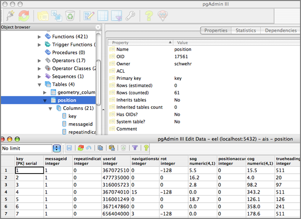
02.16.2007 08:20
Mac OSX 10.4.8 software updates
Today I am installing 3 software updates from Apple and one from
microsoft (the office patch has been out for a couple weeks).
Java for Mac OS X 10.4, Release 5 Security Update 2007-002 Daylight Saving Time UpdateBTW, Why does my laptop have a /etc/ntpd.conf and my desktop does not? Is this because I upgraded my laptop from 10.3 to 10.4 way back when? Looking in the NetInfo Manager app, I don't find any ntp entries either for my desktop. Where is it getting time from??? Time to see what tcpdump turns up.
tcpdump -i en0 | grep -i ntpMaybe I should start playing with one of the GUI packet explortation tools again.
02.16.2007 08:06
NOAA Completes Study of Stellwagen Bank Sanctuary
NOAA Completes Ecological Study of Stellwagen Bank National Marine Sanctuary Region
Complete Report [zip]
NOAA released an online report, "An Ecological Characterization of the Stellwagen Bank National Marine Sanctuary Region," containing a wealth of information about the Gerry E. Studds Stellwagen Bank National Marine Sanctuary and the Gulf of Maine region. The report summarized the results of a three-year collaborative research project conducted by the NOAA National Centers for Coastal Ocean Science, providing a new regional look at the area's rich marine ecosystems
Complete Report [zip]
02.15.2007 08:38
google fink-gis group
BABA Yoshihiko created a google group called fink-gis for the
community to discuss spatial issues with fink. Please come join in!
BABA;s list of packages that are gis related in fink:
grass gdal mapserver qgis postgresql (including postgis) proj libgeos2I would also add these and I am sure there are others.
gmt, mbsystem, pyproj-py, pclNote: PCL == Python Cartographic Library
02.14.2007 15:44
Ice Pellets Snow Freezing Fog
Ice Pellets Snow Freezing FogThis is how wunderground is describing the weather in my zip code right now. I definitely see ice pellets, but I am a bit unsure what "freezing fog" is like.
02.14.2007 15:42
it is way past the time to stop using telnet
I made my coworkers switch from rsh/rcp/telnet to ssh/scp in 1997, but
SIO just had a Solaris 10 machine broken into via telnetd!! Oh
why, oh why is telnetd available on a Solaris 10 machine? telnet
really should only be used for testing ports and data logging these
days. There is no reason to have telnetd, extra especially on
something like Solaris 10.
Another good reason to stop using telnet [sans]
Just like the don't do drugs campaign, we need a don't do telnet campaign. Or just nuke all telnetd's that you can find.
Another good reason to stop using telnet [sans]
Just like the don't do drugs campaign, we need a don't do telnet campaign. Or just nuke all telnetd's that you can find.
02.13.2007 17:19
Able to talk to postgres from python
The sea of postgres python interfaces is confusing for sure. Here is
my first successful mini script. I figured this out by looking inside
of the SQLAlchemy source tree at lib/sqlalchemy/databases/postgres.py,
which uses psycopg2.
import psycopg2 as psycopg
conn = psycopg.connect("dbname='kurttest' user='schwehr' host='localhost'")
cur = conn.cursor()
cur.execute('INSERT INTO position (UserID,COG,SOG) Values (1234,2,3);')
conn.commit()
cur.execute('SELECT UserID,COG,SOG FROM position;')
cur.fetchall()
The output was then...
Out[8]: [(1234, Decimal("2.0"), Decimal("3.0"))]
I did have to tweak the psycopg2 fink info package to depend on
postgres82 instead of postgres81. Now I am ready to build my grand
post{gres,gis}82 database {creation,import} script for noaadata.ais.
02.13.2007 16:52
LNG Deep Water Port License
LNG Project Secures Deep Water Port License [Marine Technology Reporter]
The U.S. Maritime Administration has decided to issue a deepwater port license to SUEZ Energy North America's subsidiary, Neptune LNG LLC to build, own, and operate the Neptune offshore LNG delivery system in Massachusetts Bay. Neptune is the first offshore LNG project on the United States' East Coast to reach this milestone. . The Neptune terminal will be based on the LNG Shuttle and Regasification Vessel System (SRV) developed by Hoegh LNG. ...
02.13.2007 08:49
sqlhelp gets PostGIS support
The next release of my noaadata package will add PostGIS support to
ais.sqlhelp module. It works something like this:

import sqlhelp
c = sqlhelp.create('foo','postgres')
c.addPrimaryKey()
c.addPostGIS('aPoint','POINT',2)
c.addInt('bar')
str(c)
This results in this string:
CREATE TABLE foo ( key SERIAL PRIMARY KEY, bar INTEGER );
SELECT AddGeometryColumn('foo','aPoint','POINT',2,-1);
Which, at this point, has not yet been tested against PostGIS82.
02.12.2007 12:22
PostGIS first try
Here are some quick notes on a first try at using postgis. This is
with postgres82 installed from fink on mac osx. This ignores all
database security and good design practices. This is how to get
a database up as fast as possible. Make sure your firewall is on.
sudo pgsql.sh start sudo -u postgres createdb kurttest sudo -u postgres /sw/bin/psql-8.2 -f /sw/share/doc/postgis82/lwpostgis.sql -d kurttest sudo -u postgres createuser -U postgres -W schwehr -P ./ais_msg_1.py --sql-createThe create returns this long string, so let us use that to create a table and add a point geometry type. Connect to the database and get crackin.
pgsql kurttest kurttest=# CREATE TABLE position ( MessageID INTEGER, RepeatIndicator INTEGER, UserID INTEGER, NavigationStatus INTEGER, ROT INTEGER, SOG DECIMAL(4,1), PositionAccuracy INTEGER, Position_longitude DECIMAL(8,5), Position_latitude DECIMAL(8,5), COG DECIMAL(4,1), TrueHeading INTEGER, TimeStamp INTEGER, RegionalReserved INTEGER, Spare INTEGER, RAIM BOOL, syncstate INTEGER, slottimeout INTEGER, slotoffset INTEGER, cg_r VARCHAR(15), cg_timestamp INTEGER );Now we need to add a Point Geometry field in the test table.
kurttest=# SELECT AddGeometryColumn('position','position',-1,'POINT',2);
Here is a sample message to try.
./ais_msg_1.py -t nmea -T sql -d '!AIVDM,1,1,,B,15N0wr0P1sqlite did not understand false, so convert the RAIM field's 0 into False. Insert this into the table.KC@OvT00Su,0*0F16,r993669943,1171299619'
kurttest=# INSERT INTO position (slottimeout,RegionalReserved, NavigationStatus,COG,SOG,slotoffset,Position_longitude, RepeatIndicator,UserID,RAIM,syncstate,TimeStamp,Spare, PositionAccuracy,MessageID,TrueHeading,ROT,Position_latitude) VALUES ( 0,0,0,83.3,7.6,2301,-88.2651833333,0,367017960,False, 0,18,0,0,1,511,-128,30.2619416667);But we would also like to try out the position geometry:
kurttest=# INSERT INTO position (slottimeout,RegionalReserved,
NavigationStatus,COG,SOG,slotoffset,Position_longitude,
RepeatIndicator,UserID,RAIM,syncstate,TimeStamp,Spare,
PositionAccuracy,MessageID,TrueHeading,ROT,Position_latitude)
VALUES (
0,0,0,83.3,7.6,2301,-88.2651833333,0,367017960,False,
0,18,0,0,1,511,-128,30.2619416667
,GeomFromText('POINT(-88.2651833333 30.2619416667)'));
Now take a look at this little table:
kurttest=# SELECT UserID,AsText(position) FROM position; userid | astext ===========+===================================== 367017960 | 367017960 | POINT(-88.2651833333 30.2619416667) (2 rows)
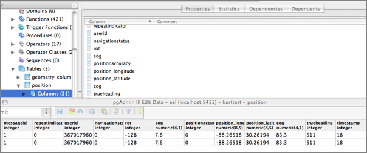
02.12.2007 11:35
postgis/pgadmin
I am starting to mess around with postgres 8.2 and postgis. There are
a few confusing points, but I am starting to get the hang of things. I am
not comfortable with stored proceedures, but even though postgis is
basically a big bunch of stored proceedures, I don't really need to
understand all the details (yet).
I also grabbed a copy of pgadmin3. It is a little strange. First I downloaded the osx tar. Untaring that gave me an osx installer application. Running that dropped a pgadmin3 app in /Applications. How about a simple downloadable dmg?
I also grabbed a copy of pgadmin3. It is a little strange. First I downloaded the osx tar. Untaring that gave me an osx installer application. Running that dropped a pgadmin3 app in /Applications. How about a simple downloadable dmg?
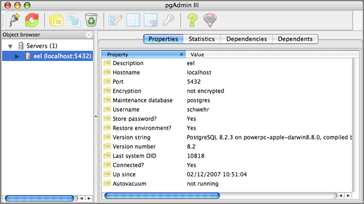
02.12.2007 10:02
xanatos web based AIS viewer
I got a chance this morning to check out the xanatos web based
AIS viewer. Here is a screen shot from Firefox on Mac OSX.
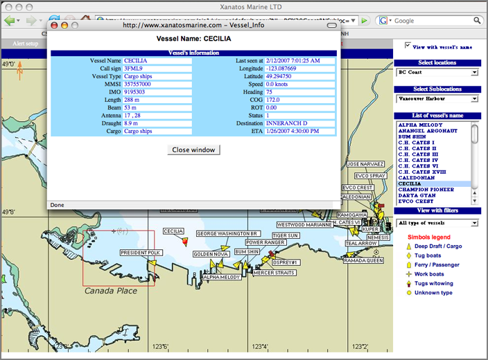
02.11.2007 14:53
Copyright
Interesting quote on the length of copyrights in the US from the Harper's essay The Ecstasy Of Influence, A plagiarism
The first Congress to grant copyright gave authors an initial term of fourteen years, which could be renewed for another fourteen if the author still lived. The current term is the life of the author plus seventy years.
02.09.2007 09:27
City of Boston 3D models
Thanks to Christiana for finding this really great site. If only more
cities did this! (Viriginia coastal cities would be very helpful)
http://www.cityofboston.gov/bra/BRA_3D_Models/Index.html
http://www.cityofboston.gov/bra/BRA_3D_Models/Index.html
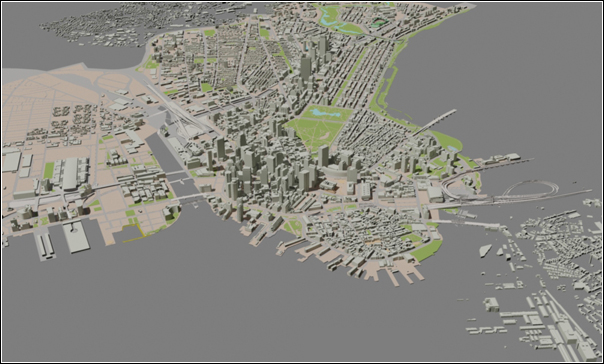
02.09.2007 09:20
boston gis dot com
www.bostongis.com looks
interesting. I found it when searching for a PostGIS tutorial. It is
MS Windows centric, but still could be useful for those of us working
on OSX and Linux.
BostonGIS is a testbed for GIS systems utilizing open source and open gis technologies. We will be using mostly Boston, Massachusetts data to provide examples.
02.09.2007 06:27
sqlitecc
Yesterday, I gave sqlitecc (SQLite Control
Center) another try on a small database with less than 20k rows.
Kaboom. The second I hit ok on the open, that was the end of it.
This was on a mac, so I am not sure if this is just a mac problem or
what. I also need to submit an update to the sqlite3 package in fink
as it is getting way out of date. As sqlitecc is an opensource
package on sf.net, I really should just download the source and fix
this thing myself. Or really, I should just migrate my dataset to
postgres/postgis.
02.08.2007 11:29
RFID Smartbuoys
Anchors Away With RFID Smartbuoys [wired.com]
... The Italian-engineered MarPark system, launched on an experimental basis last summer in a few protected areas in Liguria and Sardinia, lets boaters cruise into idyllic bays and hook a rope with a rubber ring to a smartbuoy. Simple as that, they're safely harbored, no anchor necessary.
And that's just the start. If they've reserved a water taxi or need supplies or services, a microchip in their SeaPass ring relays that info to an onshore service center. A text message reassures the skipper via mobile phone that all systems are go. ...
02.08.2007 09:19
noaadata-0.15 released
A big leap forward for my ais code. I am back to being able to create
sqlite3 databases from N-AIS formatted data. Here is an example of
how it works right now (as always... subject to change in future
versions). There is still lots of room for improvements.
egrep 'r000006099|r003669947|r003669959' log-2007-01-25 | \ ./ais_normalize.py | ./ais_build_db.py -d testregion-2007-01-25.db3
sqlite3 testregion-2007-01-25.db3 .tables position shipdata
sqlite3 testregion-2007-01-25.db3 .schema
CREATE TABLE position ( MessageID INTEGER, RepeatIndicator INTEGER, UserID INTEGER, NavigationStatus INTEGER, ROT INTEGER, SOG DECIMAL(4,1), PositionAccuracy INTEGER, Position_longitude DECIMAL(8,5), Position_latitude DECIMAL(8,5), COG DECIMAL(4,1), TrueHeading INTEGER, TimeStamp INTEGER, RegionalReserved INTEGER, Spare INTEGER, RAIM BOOL, syncstate INTEGER, slottimeout INTEGER, slotoffset INTEGER, cg_r VARCHAR(15), cg_timestamp INTEGER );
CREATE TABLE shipdata ( MessageID INTEGER, RepeatIndicator INTEGER, UserID INTEGER, AISversion INTEGER, IMOnumber INTEGER, callsign VARCHAR(7), name VARCHAR(20), shipandcargo INTEGER, dimA INTEGER, dimB INTEGER, dimC INTEGER, dimD INTEGER, fixtype INTEGER, ETA INTEGER, draught DECIMAL(3,1), destination VARCHAR(20), dte INTEGER, Spare INTEGER, cg_r VARCHAR(15), cg_timestamp INTEGER );
sqlite3 testregion-2007-01-25.db3 'SELECT \ MIN(cg_timestamp),MAX(cg_timestamp) FROM position;' 1169683514|1169769903
sqlite3 testregion-2007-01-25.db3 'SELECT DISTINCT(UserID) FROM shipdata;' 366981240 366866560 636011964 ... 366939750 ...
sqlite3 testregion-2007-01-25.db3 'SELECT Position_longitude,Position_latitude FROM position WHERE UserID=366939750;' -72.0967833333|41.4326833333 ...
# schwehr@eel.ccom.nh 47 $ cd && sqlite3 testregion-2007-01-25.db3 'SELECT COUNT(DISTINCT(UserID)) FROM position;' 43
# schwehr@eel.ccom.nh 48 $ cd && sqlite3 testregion-2007-01-25.db3 'SELECT COUNT(DISTINCT(UserID)) FROM shipdata;' 40
# Start sqlite sqlite3 testregion-2007-01-25.db3
sqlite> select COUNT(DISTINCT(UserID)) from shipdata; 40
02.07.2007 17:50
AIS strangeness
I'm working on a simpler AIS normalization program that takes a feed
from multiple receivers and makes sure that each AIS message is
represented by just a one line NMEA string. My code freaked out on
this pair.
!AIVDM,2,1,6,B,58153K02=PAQKLQ3J20uHE9<D5>058T4@l5:221ABPR,0*4F,s32065,d-085,r00370003,1169771540 !AIVDM,2,2,6,A,N`5Ve0I1m@F@C@@0000000000000,2*2A,s25906,d-106,r00370003,1169771540Note that the first part is marked as coming on channel B whereas the 2nd nmea string is on channel A. If this is true, that is bad news for folks out there with one channel receivers. Very strange.
02.07.2007 16:33
Fledermaus to Google Earth
UPDATE: I noticed that this entry got a mention over at Ogle Earth. Thanks Stefan!
I have been chomping at the bit to blog about Fledermaus 6.4, which was just released today. Once you have a scene file built in fledermaus, it takes about 1 minute to generate a KML file and have is displayed in Google Earth! I am using the Santa Barbara Basin MBARI data set for this quick demo. Here is the process...
First open your scene or sd file. Then select "Create Mapsheet" under tools.
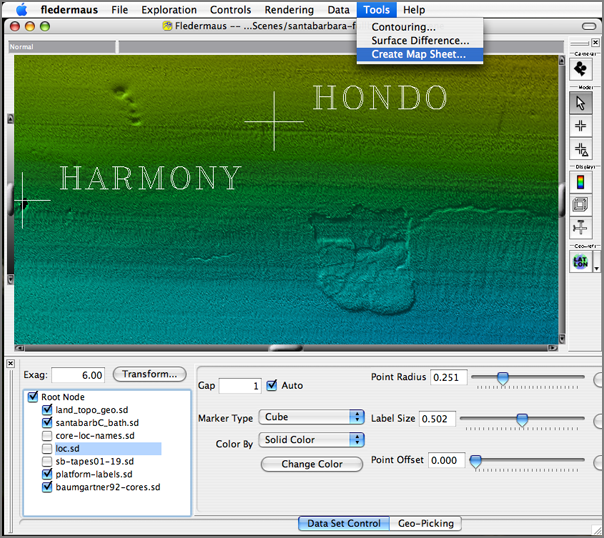
Click on "Export Map Sheet"
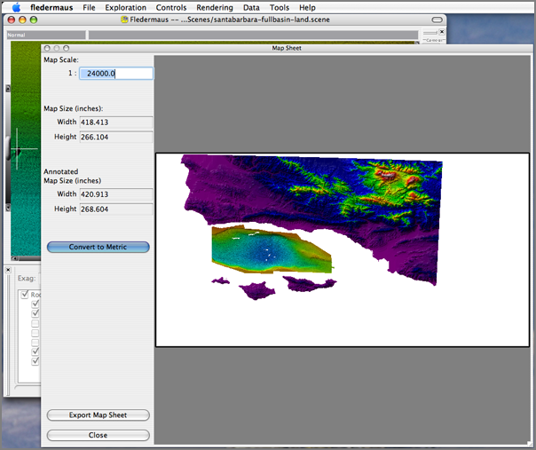
Export a GeoTIFF. I made mine resolution 1 just to get something quick. You probably want something a a little larger (but not too large). Select "Geographic Cooridnates".
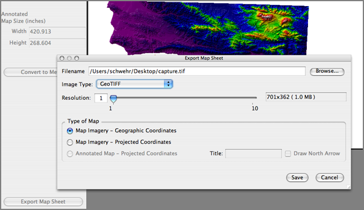
Start imageviewer and open the GeoTIFF
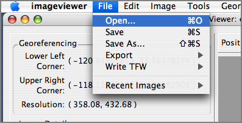
You need to make the while areas be transparent (or your overlay will look terrible).
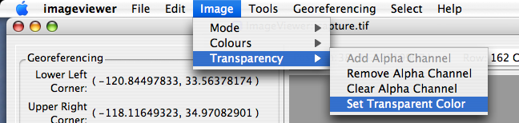
I use Fuzziness of 0 as I only want pure while and alpha of 0 for totally transparent.
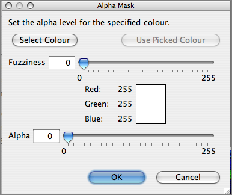
Now do a File Export to "Google Earth (Startup)" so that image viewer will create a folder with a kml and image file and start Google Earth for you.
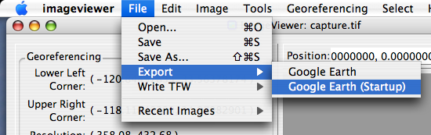
Enjoy your image overlay.
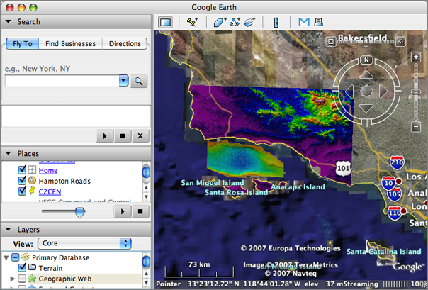
Very cool!
02.07.2007 12:26
Right Whales - Fishing Gear Restrictions
Northeast - Temporary Gear Restrictions in Effect to Protect Right Whales Temporary restrictions are in effect for lobster trap/pot and anchored gillnet fishermen in an area totaling approximately 2,185 nm2. The restricted area is in the proximity of Jeffreys Bank, approximately 80nm east of Portland, ME. The purpose of this action is to provide protection to an aggregation of northern right whales. On January 22, 2007, an aerial survey reported a sighting of thirty right whales in the proximity 43[deg] 22' N. lat. and 68[deg] 21' W. long. (east of Portland, ME). After conducting an investigation, NOAA Fisheries determined that the report came from a qualified individual and that the report was reliable.
The use of lobster trap/pot and anchored gillnet gear is prohibited in the designated area through February 20, 2007, unless it is modified in the manner described in this temporary rule.
02.07.2007 12:09
UNH CS Department Seminar Calendar
Thanks to Stephen, I now have a subscription to the UNH CS Department's Seminar Calendar:
http://www.google.com/calendar/ical/cs900atunh%40gmail.com/public/basic.ics
Here is my talk for week after next:
Here is my talk for week after next:
Exploration Visualization Kurt Schwehr Research Scientist UNH Center for Coastal and Ocean Mapping/Joint Hydrographic Center . Whether on Mars or under the oceans, visualization a key tool in developing understanding of objects in our solar system. I will outline various visualization techniques from 2D illustrations to 3D interactive graphics and talk about how they enable research in science and engineering. First I will discuss my primary research at UNH known as the "Chart of the Future" - designing visualization systems for maritime industries and ocean research. I will follow up with broad examples from planetary geology including oceanic, terrestrial, and martian environments.
02.07.2007 09:27
Lisa and Neal
Now that all of the chapters of my thesis have been accepted to
Journals, I would like to say an extra "Thank You!" to Lisa Tauxe and
Neal Driscoll for being co-chairs for my PhD. I just found this
picture today and it is one of the few of both of them in the same
picture.
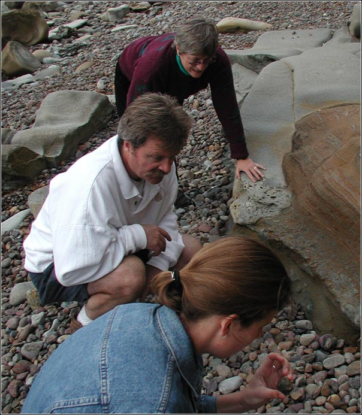
02.06.2007 10:09
Space News - JPL missions
This was passed to me by my sister...
JPL: Proposed budget would keep robotic missions running PASADENA, Calif. (AP) -- President Bush's proposed budget released Monday keeps the majority of robotic missions at NASA's Jet Propulsion Laboratory on track including two spacecraft scheduled to launch this year, officials said. The spending plan seeks to increase NASA's budget to $17.3 billion for fiscal year 2008. However, funding for unmanned missions will remain relatively steady at $5.5 billion as the space agency labors to build a space shuttle replacement and complete the international space station. Despite the flat spending on science projects, JPL officials said it will not affect the schedules of its robotic missions. The center, known for sending unmanned probes to explore the solar system, is gearing up for two launches this year -- the Dawn mission to two asteroids in June and the Phoenix Mars lander to the icy Martian north pole in August. "All of those missions look protected," said Richard O'Toole, JPL's manager of legislative affairs. However, two future planet-hunting missions -- SIM PlanetQuest and Terrestrial Planet Finder -- that aim to determine whether there are Earth-like planets beyond our solar system have been put on the backburner. Both projects have been downgraded to "technology programs" with no set launch date, O'Toole said. ...
02.06.2007 09:43
3dgeomaps.com
3D Geology Maps is based on
Microsoft's Virtual Earth. I think that is the reason that it does
not play well with Firefox on my Mac. I could not get any of the
geologic maps to come up.
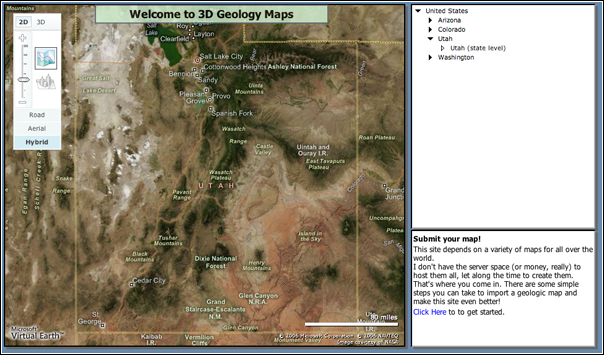
02.06.2007 08:56
Observational RSS/KML
Very interesting...
Lots of interesting direct link from these pages. For example, SOAP::Lite Implementation at SEACOOS. I need more time in the day so I can dig into this stuff!
KML currently handles spatial and temporal tags, but not data content. The below is an attempt to devise a content schema and mapping which would allow not only the display of data content, but also some meaningful data sharing within the observations community using KML/KMZ as a data transport mechanism. The kml tag used below is the 'Metadata' tag which carries the content in a more formalized xml schema.ObsKML and ObsRSS
Anyone wishing to share their data observation similarly, please email jeremy.cothran[at]gmail.com . I will maintain a registry of data observations available in this format to promote the format. I can also act to collect and promote additional lookup entries(observation and unit of measure types, etc) as needed.
Lots of interesting direct link from these pages. For example, SOAP::Lite Implementation at SEACOOS. I need more time in the day so I can dig into this stuff!
02.06.2007 08:53
Is google blurring Boston?
With all this talk of Google and India discussing blurring sites,
Roland and I noticed these strange low res patches in Boston while we
were discussing some future work plans. The irregular shape of the
lower resolution section matches the petrolium facilities.
google-blurs-boston.kmz??
google-blurs-boston.kmz??
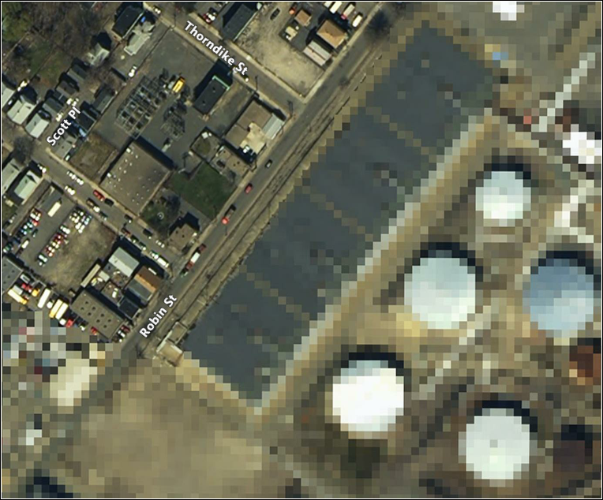
02.06.2007 08:24
updated publications list
I have (finally) updated my endnote publications list and the derived
bibtex file. Hopefully there should be fewer broken links on the
associated web page.
papers
papers
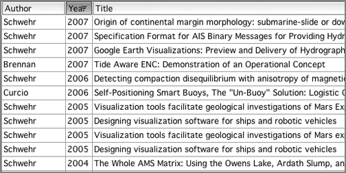
02.05.2007 09:55
noaadata-0.14 released
Just put noaadata-0.14 up on the server. This has got my first
attempt at a popup wx GUI for message 1. I need to get it working for
more messages and change the naming to something more sane.
downloads
- Putting the scripts in a proper scripts subdirectory
- Started aisxml2wxpy.py to greate WX python GUIs
- Including initial tools to start making reports
downloads
02.04.2007 10:33
Initial prototype AIS message create interface in wxPython
I have an initial prototype for a popup interface to allow the
creation of AIS messages. It only autogenerates for the position
messages (1-3), but hopefully it will not take much to make it work
for binary messages. The slider is not optimal for decimal numbers,
but it is a first start.
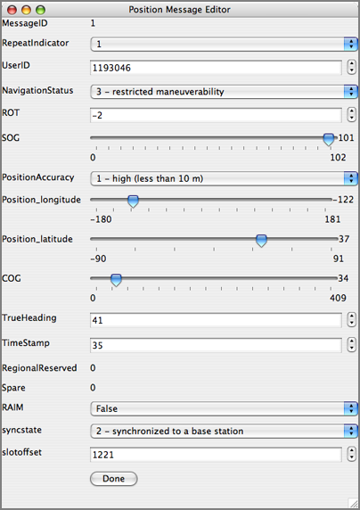
02.04.2007 09:21
Matlab finally on my desktop
I have struggled for a long time to try to get matlab running on any
of my macs. I have even purchased a stand alone copy. I was starting
to think that I was cursed with respect to matlab. I sank a couple
days once into trying to put it on an iMac about 3 years ago. One of
the guys here spent a couple hours last summer trying on my G5
desktop. This time, it just went fine! I put in my two line network
license key and that was it. Whew! I don't use matlab very often,
but when you need it, you need it. Now I can verify that 1+2 actually
equals 3.
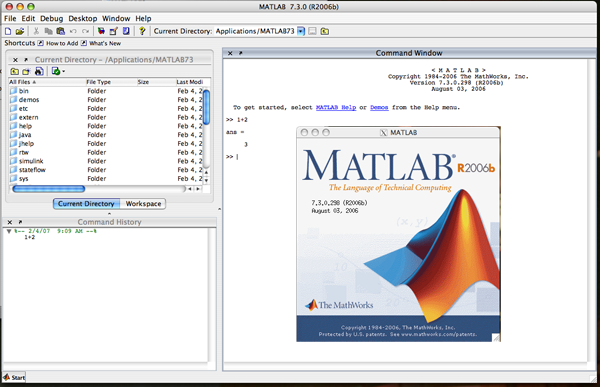
02.04.2007 08:22
USCG N-AIS rfp
Here is the actual N-AIS rfp page from the USCG. http://www.naisproject.net/NAIS_External/NAISdiscussion/rfp2/index.asp.
Why is not hosted on an USCG .mil address? Of note, I did not see any
mention of broadcasting in here.
Notice to Offerors for NAIS Increment 2 (updated Jan 19, 2007)
The U.S. Coast Guard (USCG) announces release of a DRAFT Performance Work Statement (PWS) and Performance Specification (PSPEC) to acquire contractor system integration and technical support services for Increment 2 of the Nationwide Automatic Identification System (NAIS). The USCG would like to obtain industry comments on the draft solicitation documents, which may be viewed and/or downloaded from this site.
Submit Comments: Comments and questions on these draft documents may be submitted via a form provided on this web site, using the Submit Comment button at the top of this page. Please note that these documents have not been modified since their original posting. Comments on the draft documents received by January 22, 2007 will be used to help refine the PSPEC and SOW and prepare the RFP. The USCG will treat all Offeror responses as confidential; however, Offerors should not provide proprietary business information at this time.
In addition to requesting industry review of these draft documents, the USCG requests industry response to the list of questions below (also using the submit comment form provided on this site) by January 22, 2007. Answers to these specific questions will greatly assist the USCG in the development of the Increment 2 RFP. As with comments submitted on the draft solicitation, the USCG will treat all Offeror responses as confidential; however, Offerors should not provide proprietary business information at this time.
NAIS Industry Meeting: The USCG would like to thank industry for attending and providing helpful feedback at our Industry Meeting. The USCG is confident that the dialogue held with industry will greatly assist the USCG in the development of the Increment 2 RFP. A list of industry attendees is now available. The PowerPoint Briefing presented at the meeting is also now available. Questions for Industry 1. Service Oriented Architecture (SOA) and Enterprise Services
Background: The Government intends to garner the long-term benefits of using SOA-based, net-centric architectures.
Questions:
1.a. Are the PSPEC system architecture and functional requirements sufficient for you to design and build enterprise-level SOA components (such as an Enterprise Service Bus) for NAIS deployment? If not, what additional requirements should be described?
1.b. Do you envision that the system architecture and functional requirements can be met by COTS solutions in a SOA, net-centric environment to support long term interoperability and data sharing?
1.c. Do you recommend any other service capabilities be included in the NAIS conceptual architecture? Are there any service capabilities that should be removed?
1.d. Are the descriptions of Physical Shore Stations and Logical Shore Stations clear in the context of the reference architecture and consistent with your understanding of the approved AIS specifications and operational requirements? 2. Remote Site Selection and Coverage Performance
Background: NAIS will be implemented on a regional basis and may consist of continuous coastal areas requiring complete coverage, separate localized areas (e.g., ports, strategic or critical waterways), or areas that require varying degrees of coverage (i.e., different transmit services, receive or repeat only, varying levels of reliability/availability). Offerors are expected to propose a comprehensive approach to meeting system coverage requirements within cost, schedule and performance constraints (PWS, p. 31, 3.2.3 Remote Site Survey and Selection Planning). Deployment of NAIS at selected sites must achieve the performance requirements in the PSPEC (PSPEC, p. 19, 3.1.1 Coverage Area and NAIS RF Site Performance). However, the Government is open to suggestions about how to define coverage performance such that actual system coverage can be easily verified along with any unintended coverage gaps.
Questions:
2.a. Are the coverage requirements sufficient enough that you can propose a survey and selection approach to meet those requirements? Please recommend any reasonable alternative methods to stating the requirements that more closely align with standard industry practices for implementing wide area VHF communications systems.
2.b. If the Government selects certain remote sites for implementation, what information will you require from the Government to accurately plan coverage performance?
2.c. Are there specific performance measures you would recommend for verification of actual coverage performance (e.g., tile reliability, signal strength)?
2.d. The government has completed preliminary integration testing of AIS capabilities at an existing Rescue-21 facility with promising initial results, including meeting transmission coverage requirements with no significant impacts to R21 operations. What additional information, including any analysis results, test and site location data, do you require to incorporate use of R21 sites into your proposal? Please be advised that most of the R21 detailed design information is proprietary and restricted to government use only.
3. Data Storage & Management
Background: The Coast Guard Operations Systems Center (OSC) has developed and now operates the initial AIS data storage and processing capabilities. The Coast Guard must also plan and implement data hosting and storage capabilities to meet Departmental requirements, including migration of existing capabilities to the DHS Enterprise Data Center at Stennis Space Center, MS, and build-out of capabilities at a redundant site.
Questions:
3.a. What additional information do you require to propose an overall data hosting, processing and storage strategy that leverages existing and commercially available solutions to meet the stated requirements?
4. Integrated Logistics and Support
Background: The Coast Guard will implement all NAIS operations and maintenance capabilities in accordance with agency integrated logistics policies and systems. In general, this means that proper planning and resourcing of NAIS training, system support, operations, maintenance, etc. capabilities is critical to successful integrated logistics support, i.e., meeting stated operational availability requirements..
Questions:
4.a. Is there specific information that you need from the Government to propose an initial support solution and plan for transition to the Government prior to the established Coast Guard Support Date (PWS 3.4)?
4.b. Are there unique support requirements for AIS technologies and systems to consider for this approach?
5. Networking Services
Background: NAIS will leverage current and planned USCG and DHS LAN and WAN infrastructure, including transition to and full use of the DHS OneNet network. The Offeror will may be required to provide a network solution in areas where NAIS implementation requirements precede OneNet availability. In all cases the Offeror will be required to work with the Coast Guard and Customs and Border Patrol, the DHS OneNet cognizant management agent, to provide "last mile" connectivity into the network architecture to meet all operational service level requirements
Questions:
5.a. Are there specific network requirements that should be included in the system specification and work statement, in addition to the required NAIS service levels, to enable your proposal development?
5.b. Are there requirements unique to the Multi-Protocol Label Switching (MPLS) architecture that should be included in the specifications?
The above questions are for planning purposes only and shall not be construed as a Request for Proposal or as an obligation on the part of the USCG to acquire any products or services. The USCG does not intend to award a contract on the basis of these questions or otherwise pay for information requested. Submission of a response to one or all of the questions is entirely voluntary. The voluntary submission of a response shall not obligate the USCG to pay or entitle the submtter of information to claim any direct or indirect costs or charges or any other remuneration whatsoever.
02.04.2007 08:15
Jane's on National-AIS network
Two articles on the USCG N-AIS popped up in Jane;s Naval Forces News
Briefs this week. [http://jni.janes.com/]
US Coast Guard gets go-ahead for national AIS The US Coast Guard (USCG) has announced it has received formal approval from the Department of Homeland Security to issue solicitations and award contracts to establish initial operating capability for the two-way, situational awareness system known as the Nationwide Automatic Identification System (NAIS).and
Orbcomm plans launch of first coast guard AIS satellite Orbcomm Inc, a US Coast Guard (USCG) contractor based in New Jersey, is planning to launch seven commercial satellites equipped with a coast guard ship-tracking...It will be interesting to see what percentage of the AIS messages the Orbcomm satellite will actually receive. The percentage of collisions between TDMA regions is likely to be very large. My prediction is that initially, the satellite reception will be poor for coastal regions and get much worse with time, but should be very successful for low traffic density areas such as the high seas.
02.03.2007 18:06
Blender with KML support
Blending KML
kml_export.py is a python script for blender that supports meshes and diffuse lighting. Not much, I know, but KML doesn't support much 3d. This is really a quick-release, rough cut, leaves much to be desired release - but it gets the job done.Now I just need to learn how to use Blender. Does blender support the 3DConnexion SpaceTraveler on the Mac???
02.03.2007 17:47
OGC Seeks Participants for Ocean Science Interoperability Experiment
Wayland, MA, February 1, 2007. The Open Geospatial Consortium Inc. (OGC) launched an Interoperability Experiment on ocean science interoperability on January 29, 2007. The initiators of the experiment seek participation by other organizations interested in interoperability among information systems used in ocean research.
The Oceans Science Interoperability Experiment will promote understanding of various OGC Web Service (OWS) standards now implemented in various portal applications in the Ocean-Observing community, advance interoperability demonstrations for Ocean Science application areas, and harden software implementations. The final product of the experiment will be a candidate OGC Best Practices document for the broader ocean-observing community. The Best Practices document will show how to use OGC specifications in marine-specific applications to improve discovery, access and use of Web-accessible ocean science data and services.
The OGC members acting as initiators of the Interoperability Experiment are: * Southeastern Universities Research Association (SURA) * Texas A&M University - Academy for Advanced Telecommunications and Learning Technologies (TAMU) * National Center for Atmospheric Research (NCAR) * Monterey Bay Aquarium Research Institute (MBARI) * Gulf of Maine Ocean Observing System (GoMOOS)
Philip Bogden of GoMOOS said, "The Ocean Science community recognizes that standards enable innovation in scientific research and its practical applications. Our partners around the country have years of experience using OGC specifications (e.g., www.oostethys.org), and we welcome this opportunity to inform and advance the latest OGC standards."
Organizations that wish to participate and that can meet the Requirements for Participation must notify the OGC before February 15, 2007 of their desire to participate.
Oceans Science Interoperability Experiment Activity Plan
02.02.2007 09:03
gdal-python-py fixed in fink
Many thanks to Todd Steissberg for reporting gdal-python-py in fink as
broken. That package is back to working. Fink is as good as the
community makes it. Please do send a report from finkcommander if you
find something that does not work.
02.02.2007 08:44
webalizer
I just had some fun by running webalizer for the first time in 6
months. I don't have the older logs merged in, but here are some of
the results. I haven't seen the search strings section before. Very
amusing and strange. Most of those hits make sense, but I don't do
"automatic control of refrigerators."
If you are searching for "what is a geyser," I think you want EXPLORE YELLOWSTONE'S HOT SPRINGS. I don't think I talk about geysers in my blog at all.
I don't see google in my top hits, which is surprising, but I do see yahoo and bloglines, which are to be expected.
If you are searching for "what is a geyser," I think you want EXPLORE YELLOWSTONE'S HOT SPRINGS. I don't think I talk about geysers in my blog at all.
I don't see google in my top hits, which is surprising, but I do see yahoo and bloglines, which are to be expected.
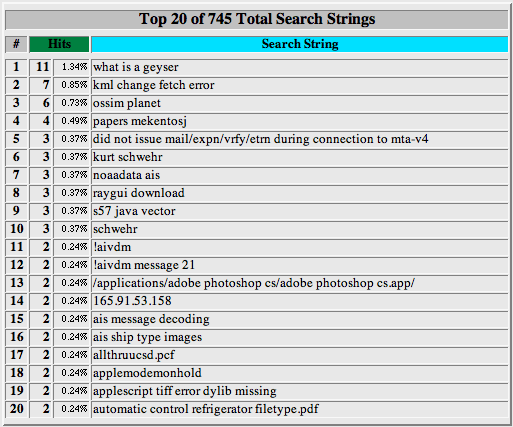
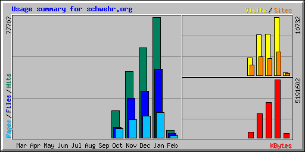